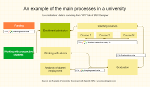
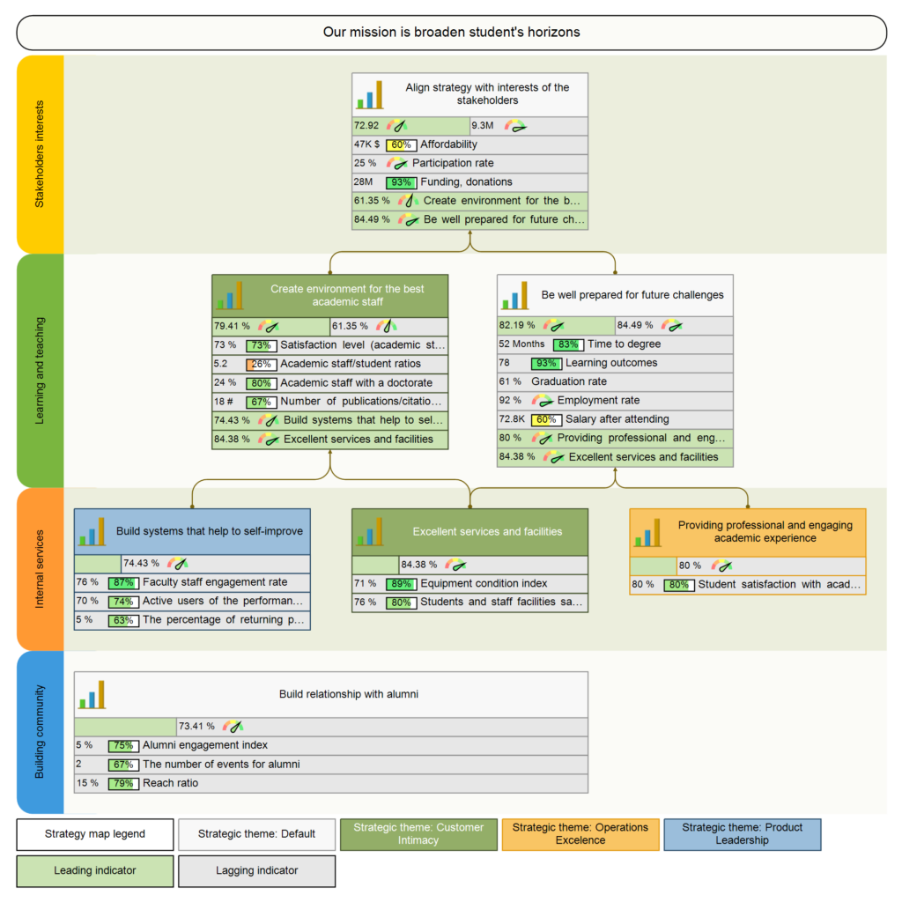
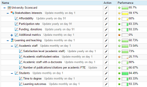
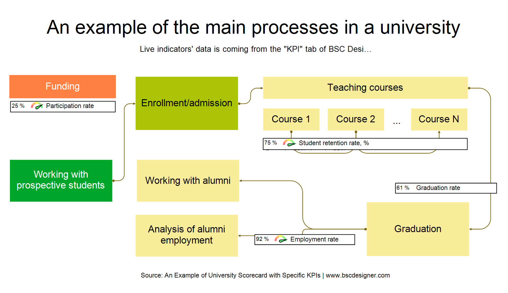

Пример системы показателей университета с примерами KPI
Узнайте о лучших практиках создания системы показателя университета и измерения различных аспектов производительности при помощи ключевых показателей производительности (KPI).
основные профессии:
Базовая модель университета
Образовательные заведения отличаются друг от друга: они обладают уникальными ценностями и различными подходами к обучению. С другой стороны, во всех университетах можно найти некоторые общие черты.
99+
Заинтересованные стороны
Чьи интересы необходимо принимать во внимание при создании стратегии и системы измерения производительности университета?
Основной «клиент» — это студент. Как правило, студентов разделяют на 3 группы:
Абитуриенты и их семьи
Студенты
Выпускники
99+
Контекст измерения
Перед тем, как перейти к рассмотрению процесса измерения производительности, задайте себе два вопроса:
Зачем нам система показателей или KPI?
Какие задачи они помогут решить?
Чтобы ответить на эти вопросы, необходимо ещё раз просмотреть список заинтересованных сторон. По определению каждая заинтересованная сторона будет иметь какой-либо интерес в предмете измерения.
99+
Рейтинговые системы
Рейтинг университетов мира QS также предлагает индикаторы, на которые стоит обратить внимание:
Академическая репутация
Репутация среди работодателей
Количество цитирований на факультет
Доля иностранных студентов
Рейтинг трудоустройства
В некоторых случаях данные показателей, ориентировочные индикаторы и методология измерения доступны онлайн. Например, QS публикует информацию о методе составления общего рейтинга и рейтинга трудоутройства.
Многие университеты используют позицию в подобных рейтингах в качестве индикатора эффективности на информационной панели.
99+



Базовая модель университета. Как он функционирует?
Образовательные заведения отличаются друг от друга: они обладают уникальными ценностями и различными подходами к обучению. С другой стороны, во всех университетах можно найти некоторые общие черты. Для целей дальнейшего анализа мы начнём с визуального представления основных операций вуза. По нашему опыту, подобный этап помогает сделать дальнейшее рассмотрение KPI и стратегии более эффективным. Визуально модель университета может выглядеть следующим образом:

Система показателей университета
Воспользуйтесь бесплатным планом для доступа к 30 шаблонам ССП, включая Система показателей университета.
Как можно заметить, карта включает некоторые показатели эффективности. Это «стандартные» KPI, включаемые в большинство систем показателей университетов.
доля показание
%. Процент представленности определённой группы населения среди студентов.
6
Показатель удержания,
%. Удержание студентов, измеряемое от курса к курсу.
9
Доля окончивших университет,
%. Процент студентов, успешно завершивших курс обучения.
1
Результаты с точки зрения найма.
Более подробную информацию вы найдёте в разделе «Показатели рейтингов».
12
Для иллюстрации некоторых идей здесь и далее я использую скриншоты системы показателей университета, созданной в BSC Designer. Этот пример находится в открытом доступе (ссылки даны в конце статьи). Карту процессов вы найдёте во вкладке «Стратегическая карта» (обратите внимание на необходимость переключиться между картами для доступа к карте процессов).